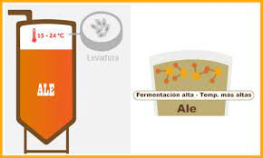
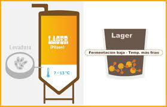
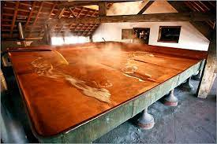

Hablaremos un poco de tipos de Cerveza en el mundo.
Empecemos comentando que de acuerdo a nuestra investigación, existen diferentes fermentaciónes.
La fermentación que nos interesa es la Alcoholica, ya que en esta, la cerveza es una bebida que se obtiene mediante la fermentación alcohólica del lúpulo, la levadura, la malta y el agua.
Podemos decir que existen 3 tipos de cerveza de acuerdo a su fermentación
| Alta (Ales) | Baja (Lagers) | Espontánea |
|---|---|---|
| La levadura de alta fermentación actúa a temperaturas de entre 12 y 24 ºC y se sitúa en la superficie del mosto, describiéndose dentro de estas últimas también el grupo de las de fermentación espontánea. | La levadura de baja fermentación actúa a temperaturas de entre 7º y 13º C y se suelen situar en el fondo del fermentador. | Son las cervezas que fermentan espontáneamente mediante cepas salvajes de levaduras que están en el ambiente |
|
|
|
|
|
|
|  |  |  |